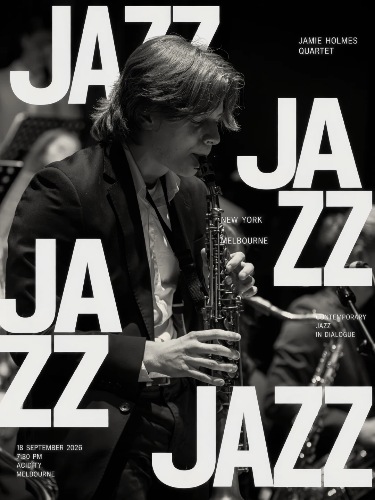

Live at Acidity
New York Jazz | Jamie Holmes Quartet
Contemporary New York jazz in dialogue with an Australian musical identity, featuring original compositions and music influenced by Immanuel Wilkins and Chris Potter.
- Date
- Friday, 18 September 2026
- Time
- 7:30PM
- Artist
- Jamie Holmes Quartet
- Tickets
- Early Bird $15 · General $20